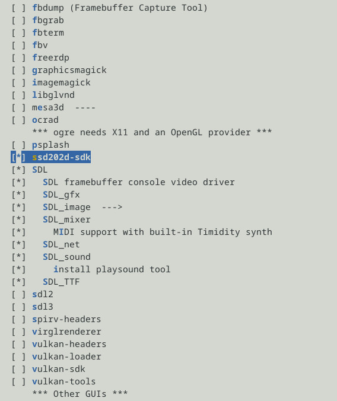

Steward
分享是一種喜悅、更是一種幸福
掌機 - Miyoo Mini Flip - 如何添加SSD202D SDK到Buildroot
在Buildroot根目錄
$ mkdir package/mmf
$ touch package/mmf/mmf.hash
$ vim package/mmf/Config.in
config BR2_PACKAGE_MMF
bool "ssd202d-sdk"
help
Install SSD202D headers and libraries into the Buildroot staging
directory and target filesystem.
$ vim package/mmf/mmf.mk
MMF_SITE = $(TOPDIR)/package/mmf
MMF_SITE_METHOD = local
define MMF_INSTALL_TARGET_CMDS
mkdir -p $(STAGING_DIR)/usr/include
mkdir -p $(STAGING_DIR)/usr/lib
cp -a $(@D)/include/. $(STAGING_DIR)/usr/include/
cp -a $(@D)/lib/. $(STAGING_DIR)/usr/lib/
endef
$(eval $(generic-package))
$ vim package/Config.in
354 source "package/mmf/Config.in"
355 source "package/sdl/Config.in"
$ wget https://github.com/steward-fu/website/releases/download/miyoo-mini-flip/sdk.tar.gz
$ tar xvf sdk.tar.gz -C /tmp
$ cp -a /tmp/sdk/include package/mmf
$ cp -a /tmp/sdk/lib package/mmf
$ make menuconfig

編譯
$ make
$ find /opt/mmf/ -name "*mi_*" | head -n 3
/opt/mmf/arm-mmf-linux-gnueabihf/sysroot/usr/include/mi_divp_datatype.h
/opt/mmf/arm-mmf-linux-gnueabihf/sysroot/usr/include/mi_venc.h
/opt/mmf/arm-mmf-linux-gnueabihf/sysroot/usr/include/linux/ipmi_msgdefs.h